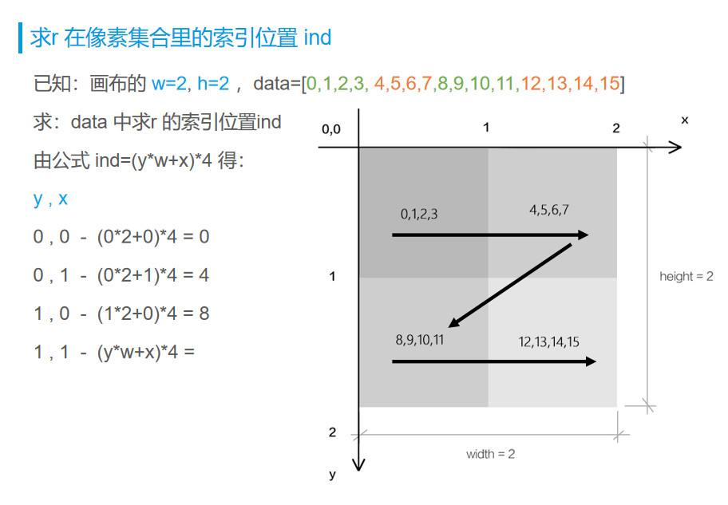
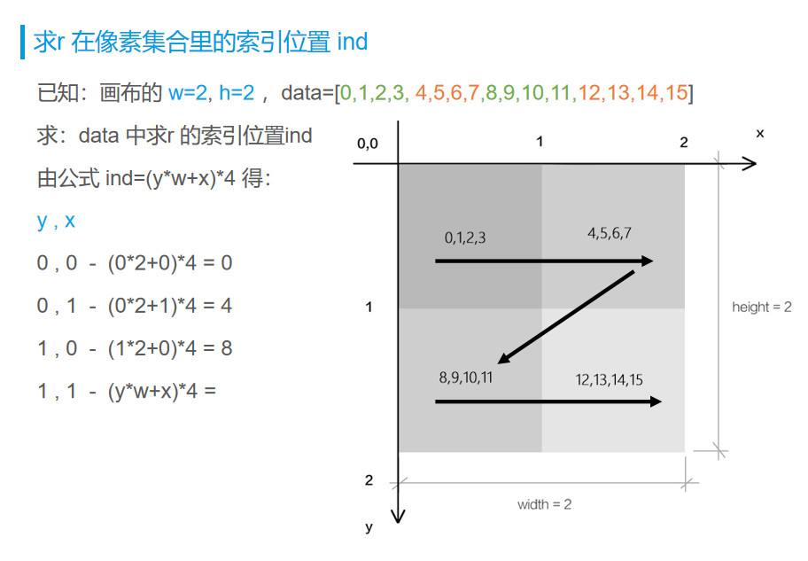
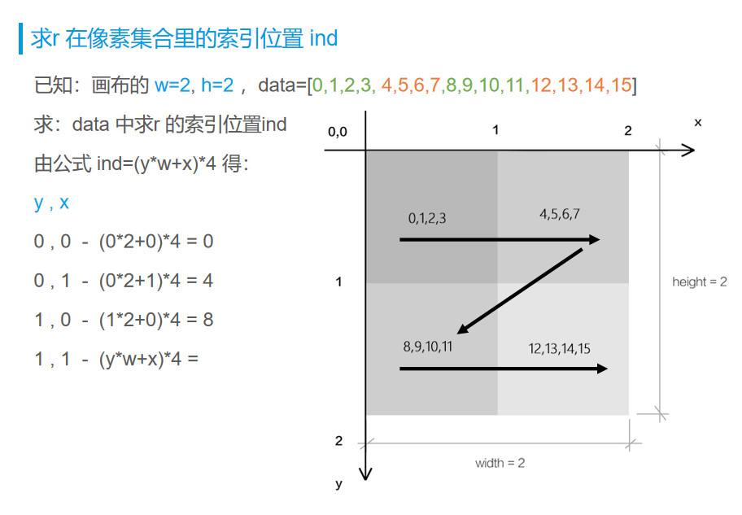

对不起！当您能看到这句话时，表示您当前的浏览器不支持canvas标签（IE9级以上才兼容），建议您升级浏览器后再试！ canvas尺寸：默认大小：宽300px, 高150px，最大尽量在4096px以内（当然不同的浏览器也会不一样）； canvas尺寸设置：建议直接在canvas标签上设置，或者是在js中的canvas.width/height上设置，不建议在CSS样式中设置，但（在CSS中的优先级最高）；

 
